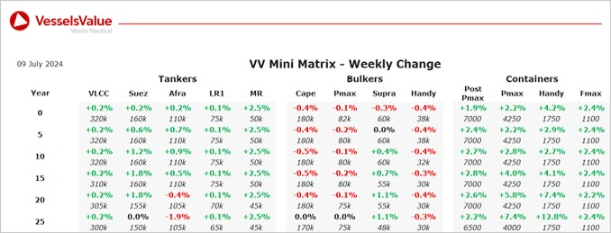

inWeekly Vessel Valuations Report10/07/2024

Bulkers:Bulker values were stable last week apart from slight softening for older tonnage Supramax BCs
Capesize BC Ocean Courtesy (177,000 DWT, Mar 2008, SWS) sold to Jinjui Shippings and Transportation for USD 24 mil, VV Value USD 24 mil
Post Panamax BC Lowlands Horizon (93,500 DWT, Sept 2018, Oshima) sold to unknown Greek buyers for USD 36 mil, VV Value USD 36.5 mil
Supramax BC Supra Oniki (57,000 DWT, Jul 2010, Qingshan Shipyard) sold to unknown Chinese for USD 13.25 mil, VV Value USD 13.36 mil
Handy BC (Open Hatch) Hainan Island (32,600 DWT, Sep 2004, Kanda) sold SS/DD Due to unknown Chinese for USD 8.8 mil, VV Value USD 9.31 mil
Tankers:Tanker values remained mostly stable with mid age Suezmax values firming due to the sale of Front Thor
Suezmax Front Thor (156,000 DWT, Jan 2010, Jiangsu Rongsheng) sold to unknown Far Eastern for USD 48 mil, VV Value USD 46.54 mil
Containers:Secondhand values continued to firm tracking earnings
Handy Container Hansa Wolfsburg (1,732 TEU, Dec 2007, Guangzhou Wenchong) sold to undisclosed buyers for USD 14 mil, VV Value USD 13.63 mil
Feedermax trio Kiso (1,096 TEU, May 2023, Kyokuyo) and Kaifu (1,096 TEU, July 2023, Kyokuyo) and A Ontake (1,096 TEU, Sep 2023, Kyokuyo) sold en bloc (BWTS) to undisclosed buyers for USD 78 mil, VV Value USD 81.3 mil
Feedermax HS Busan (962 TEU, Dec 2006, Dae Sun) sold to undisclosed buyers for USD 7 mil, VV Value USD 8.74 mil
